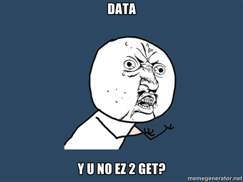
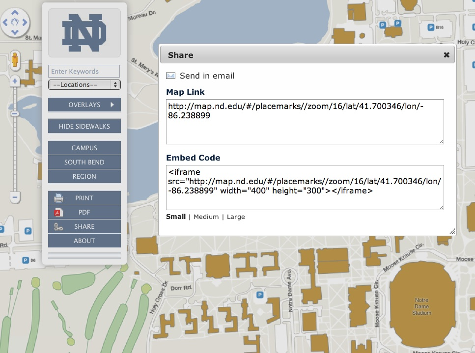
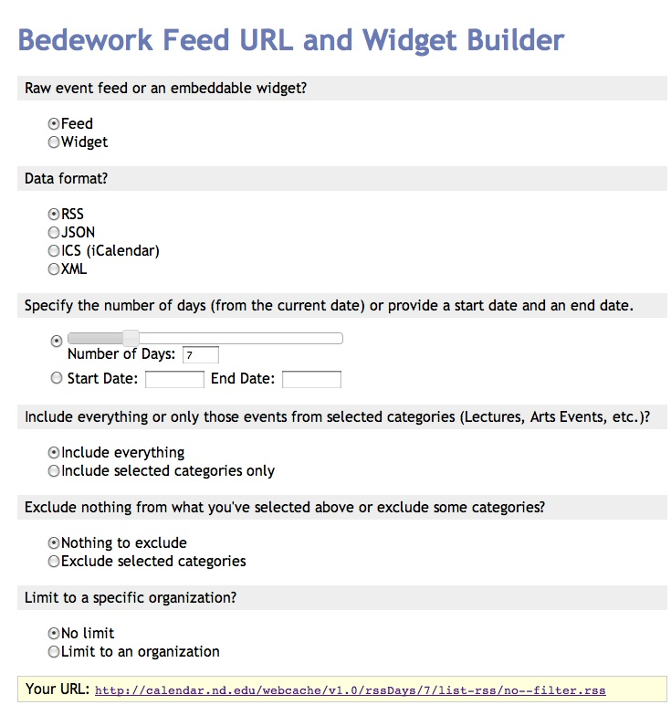
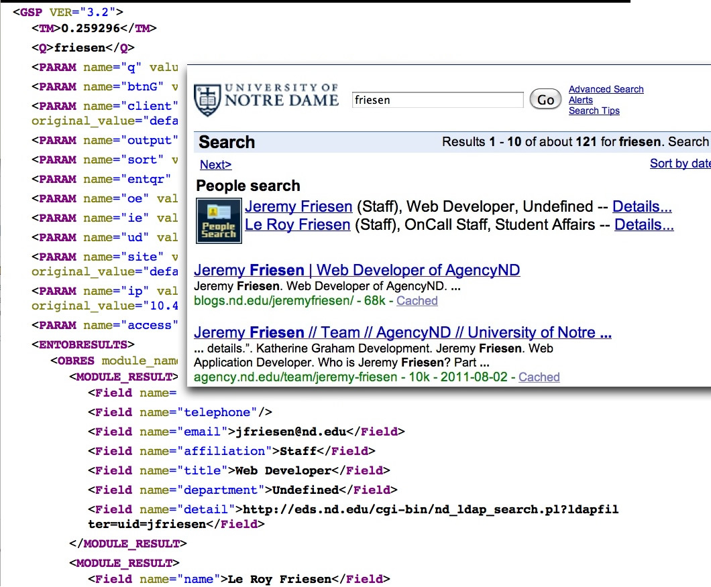
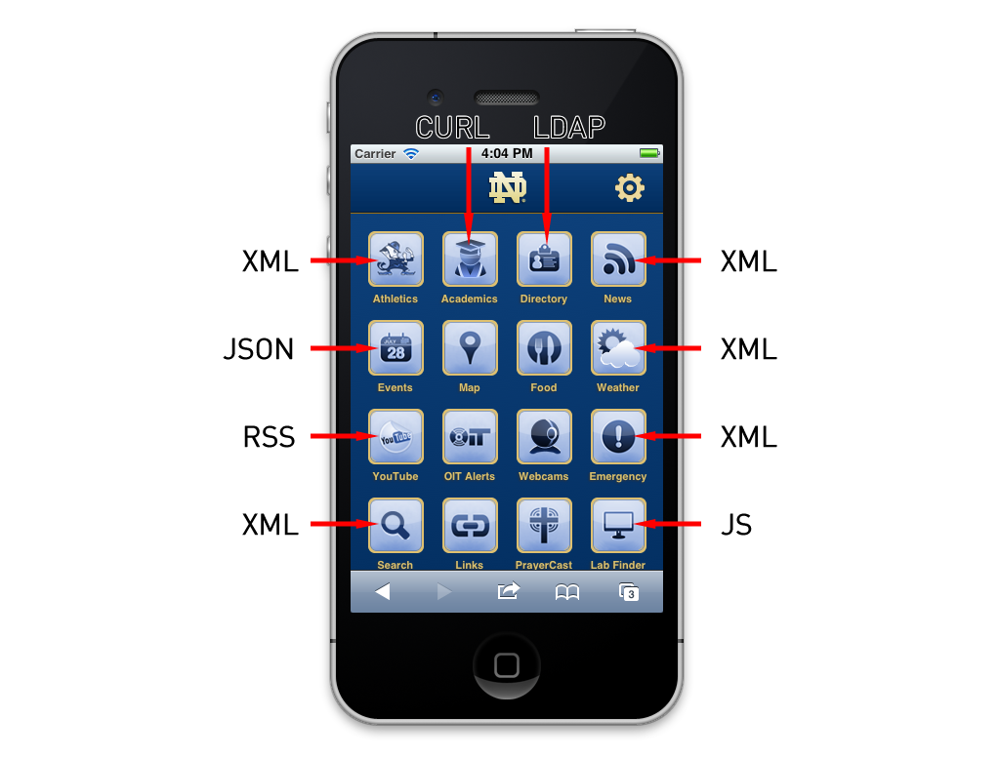
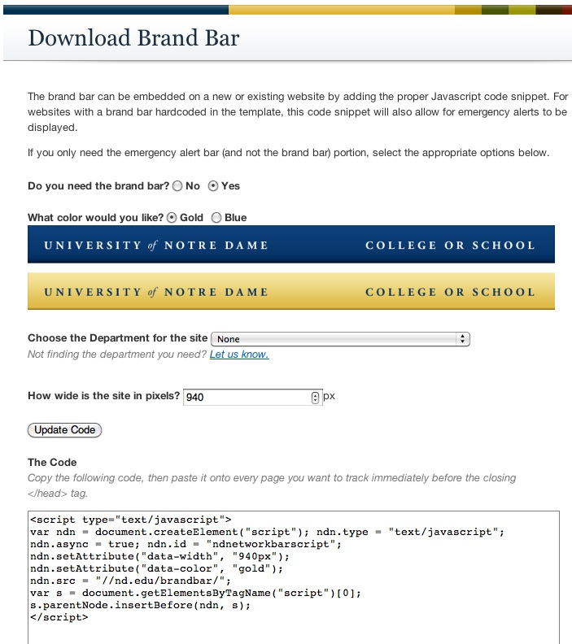
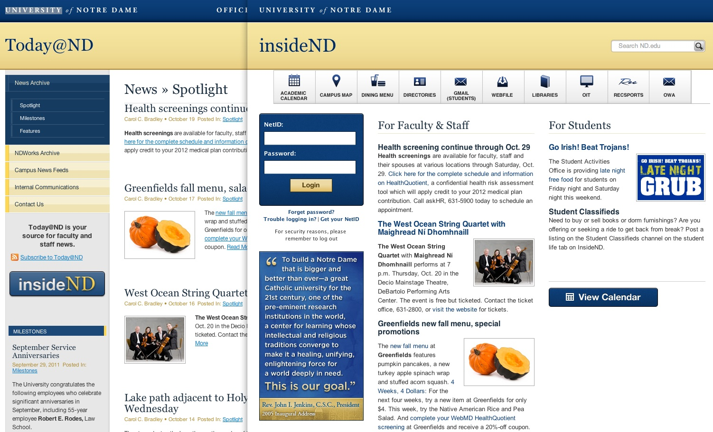

Contact
Jeremy Friesen
- jfriesen@nd.edu
- @jeremyfriesen
- Blog
- takeonrules.com

Slides and Notes Available on Github
github.com/erunyon/HighEdWeb-2011
or if you'd prefer a shorter link to write down
bit.ly/hew2011
An application programming interface (API) is a particular set of rules (‘code’) and specifications that software programs can follow to communicate with each other. It serves as an interface between different software programs and facilitates their interaction, similar to the way the user interface facilitates interaction between humans and computers.
Wikipedia
Any interface that allows for easy manipulation of data.
Photo credit: flickr.com/photos/katerha
Photo credit: flickr.com/photos/marubozo/
Permanently Moving Content from One Source to Another
Photo Credit: flickr.com/photos/spyndle
If you write software that is going to manage data, include interfaces to get that data out.
Conductor accepts requests in several different formats and responds accordingly
map.nd.edu accepts requests in several different formats and responds accordingly
Bedework is built on Java Struts. The FeedBuilder is a Ruby on Rails subproject that accesses the internal Bedework Struts API.
We make use of the Google Search Appliance's API by processing the output XML in Conductor and ND Mobile.
More than any site, m.nd.edu highlights our use other data sources.
Provide a simple means of adding the brand bar to all sites. And the script integrates with emergency.nd.edu.
Today@ND is for internal Faculty and Staff news.
insideND is the default homepage of workstations.
Today@ND provides one of the feeds for insideND
Site owners can opt to:
Food Services provides an XML feed of dining hall menus for upcoming two days.
github.com/erunyon/HighEdWeb-2011
or if you'd prefer a shorter link to write down
bit.ly/hew2011
/
#